CampusMaps design hand-off
Everything a designer needs to style the app without having seen it. The current screenshots are from the Android emulator with the Material 3 defaults (no styling yet). The wireframes show the intended layout, including parts that are not built yet.
1. Product and demos
CampusMaps is indoor navigation for a university campus. It is like Google Maps Live View, but it works inside buildings. The phone's camera view shows 3D arrows on the hallway floor that lead to a room. The app picks the entrance that gets you to your room fastest, avoids doors that are card-only at that hour, and can avoid stairs. It finds your position by recognising signs and posters it already knows, and everything runs on the phone. Ray-Ban Meta glasses speak each turn so your hands stay free. A Galaxy Watch shows one big arrow and buzzes a different pattern for each kind of turn. It is being built in 36 hours at HackGT 13 (Georgia Tech) for the Immersive track. Judging happens at an expo table in the Klaus Atrium, where judges hold the phone themselves.
Demo A: live in Klaus live, judge holds phone
A judge picks a destination from a short list, points the phone at a sign, and floor arrows appear leading down the hallway. They walk under 60 m to the room, and the app says "You have arrived" at the door.
Demo B: Classroom South recorded video
The same room (608, floor 6) is requested from two sides of the building, and the route cards recommend different entrances with real ETAs. Turning on "Avoid stairs" removes the stairs options live, and the route rides the elevator across floors.
Demo C: Student Center, after hours recorded video
A user with the phone in a pocket hears through the glasses: "Heads up: Main entrance is card-only now. Using West entrance instead." Inside, the glasses see signs and speak each turn while the watch buzzes and shows the arrow.
The pitch in one line: "Google Maps gets you to the building. Then you're on your own." Keep that tone: calm, practical, and a little cheeky. The app shell should stay quiet so the AR view and the voice are what people notice.
2. Screen flow
Two rules shape the flow. First, a judge holds the phone for about 60 seconds, so every action must be a visible button with no hidden gestures. The only hidden gesture is the debug toggle, and demo mode turns it off. Second, the team must reset the phone between judges in under 20 seconds, which is what Reset is for. The spec also says to skip S1b when you start inside and there is only one sensible route. That is not built yet.
3. S1 Destination
This is where the user picks a room. For the judge it is one tap, because the building is preselected and the demo destinations are already listed.
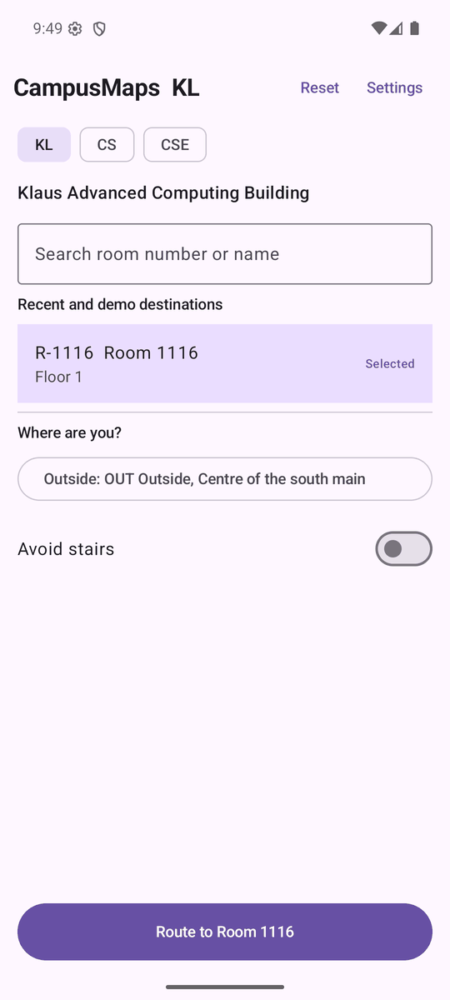
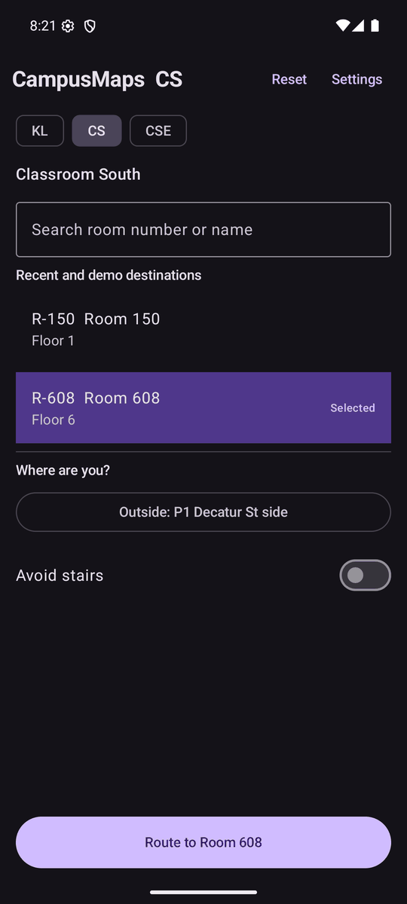
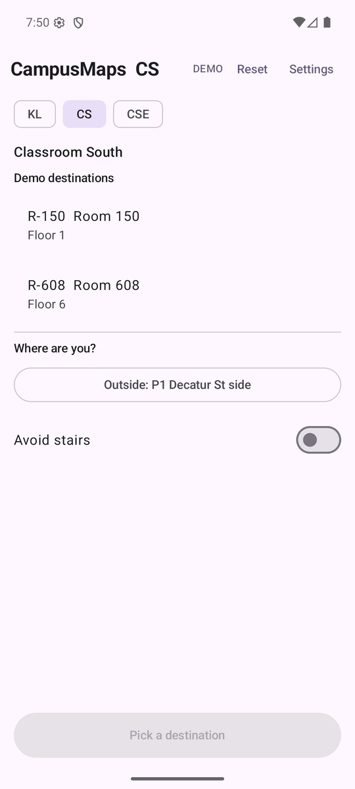
Elements
| Element | Purpose | States | Exact copy today |
|---|---|---|---|
| App bar title | App name + current building code. Long-press toggles the debug overlay. | normal; demo mode adds a tag; long-press disabled in demo mode | CampusMaps KL, DEMO |
| Reset, Settings | Reset clears the destination and returns to S1 (the team uses it between judges). Settings opens the sheet. | always visible | Reset, Settings |
| Building chips | Pick one of three buildings. Preselected from the "demo building" setting. | selected / unselected | KL CS CSE; names: Klaus Advanced Computing Building, Classroom South, Student Center East |
| Search field | Filter room nodes by number or name; top 5 hits. The keyboard's search key picks the top hit. | empty; typing; no match; with Clear; hidden in demo mode | Search room number or name, Clear, No room matches "6608" |
| Destination list | One-tap demo destinations. | selected (tinted + label); empty | Recent and demo destinations/ demo mode: Demo destinations; row R-608 Room 608+ Floor 6; Selected; None in this building file |
| Where are you? | Start point. Today a picker; later the real position from sign recognition. | outdoor start point; inside node | Where are you?, Outside: P1 Decatur St side, Inside: S1, Start 1, west of our table (floor 1) |
| Avoid stairs | Accessibility preference, persisted. | on / off | Avoid stairs |
| Route error | Why there is no route. | hidden / shown in error colour | No route to Room 220: every entrance is card-only at Sat 23:00. |
| Route button | Go to S1b. | disabled / enabled | Pick a destination/ Route to Room 608 |
Design notes
- Use the full building names on the chips (the judge does not know "CSE"). A segmented button fits three.
- Destination rows should read as big tappable cards: room name first, floor second, 56 dp or taller.
- The primary button sits at the bottom within thumb reach, full width, 56 dp tall.
- Reset should look safe but not tempting. The team needs it; a judge should not tap it by accident. An icon with a label on long-press is fine, as long as the tap target is 48 dp.
- Demo mode hides search and the debug gesture. The screen must still look complete without the search field.
4. S1b Route options
This is the "smart" screen of Demo B. It shows two or three ways in, best first, with a real ETA on each. The avoid-stairs toggle is repeated here so flipping it in front of a judge changes the cards live.
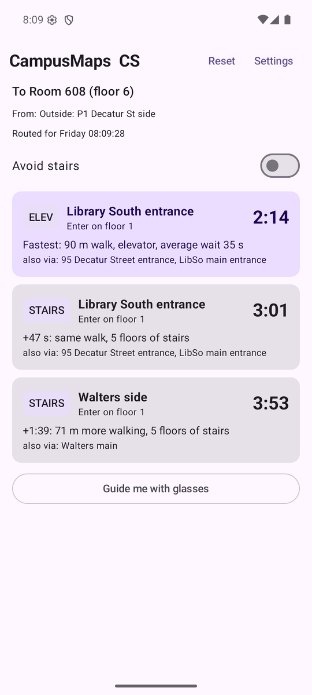
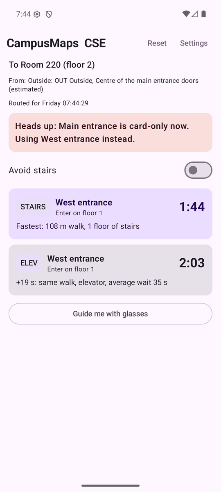
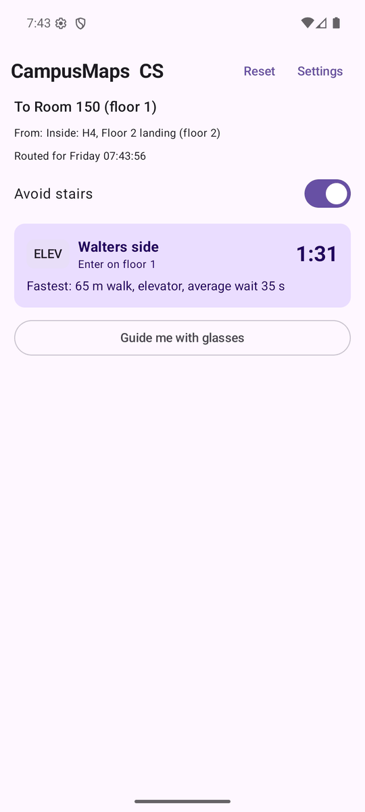
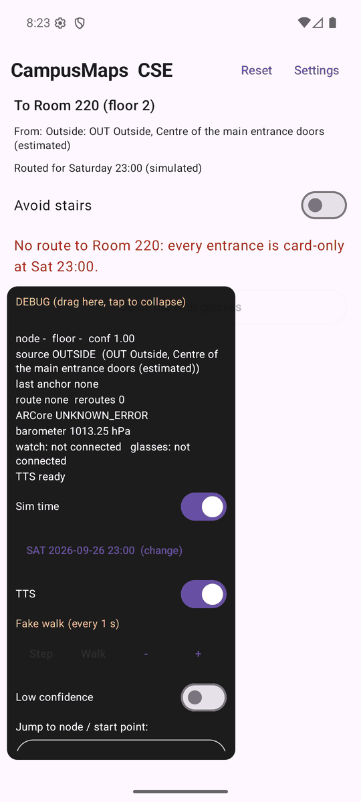
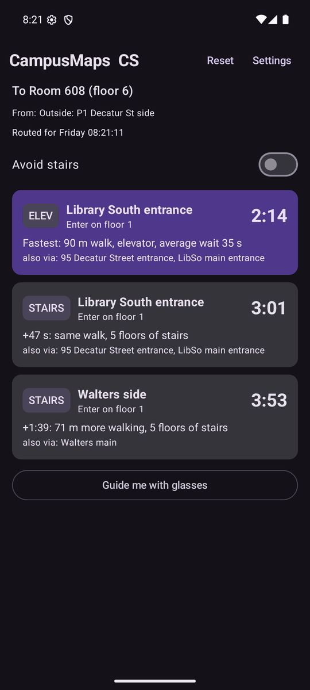
Elements
| Element | Purpose | States | Exact copy today |
|---|---|---|---|
| Header | Destination, start, and the time used for routing (access rules depend on the time). | real time / simulated time | To Room 608 (floor 6), From: Outside: P1 Decatur St side, Routed for Saturday 21:00 (simulated) |
| Locked-entrance banner | Explains that a door was skipped because it is card-only now. Demo C's key moment on screen. | hidden / shown | Heads up: Main entrance is card-only now. Using West entrance instead.(fallback: …Taking another way.) |
| Avoid stairs | Same setting as S1; flipping it recomputes the cards live. | on / off | Avoid stairs |
| Route card (×1–3) | One way in. Best first, highlighted. | best; other; "from here" (start is inside); "already here" | title Walters mainor From here/ From here, by elevator/ You are already here; Enter on floor 1 |
| Vertical-method badge | Stairs, elevator or no floor change. Should become an icon. | 3 values | STAIRS, ELEV, LEVEL |
| ETA | Total time door to door, m:ss. | number; unknown | 2:14, --:-- |
| Explanation line | What makes this card different from the best one. | best / delta | Fastest: 90 m walk, elevator, average wait 35 s, +47 s: same walk, 5 floors of stairs, +1:39: 71 m more walking, 5 floors of stairs, no floor change |
| Also via | Other doors that lead onto the same route. | hidden / shown | also via: 95 Decatur Street entrance, LibSo main entrance |
| Glasses button | Starts S3 with the best route. Today it is always shown; the spec wants it offered when glasses are connected. | enabled / disabled (no options) | Guide me with glasses |
Design notes
- This screen is filmed for Demo B. The ETA and the entrance name must be readable in a 1080p screen recording that is shown small on a laptop at the table: ETA at least 28 sp, entrance name at least 16 sp.
- The difference between cards is the story. The best card should stand out through more than colour alone (a "Fastest" label, larger size or elevation).
- Cards change in place when Avoid stairs is flipped. A short cross-fade or reorder animation helps the viewer see the change on video.
- The banner is information, not an error: the app has already solved the problem. Use a warning or tertiary tone with a lock icon, not an alarming red.
- Stairs and elevator icons need to differ in shape, not only in colour.
5. S2 AR guidance
This is the hero screen and the judge's whole experience. It is the full-screen camera with arrows drawn on the floor, the current instruction at the top, and a small map at the bottom. Today only the camera, text and minimap exist. On the emulator the camera area is a dark fallback panel ("AR unavailable on this device"), because the emulator has no ARCore.
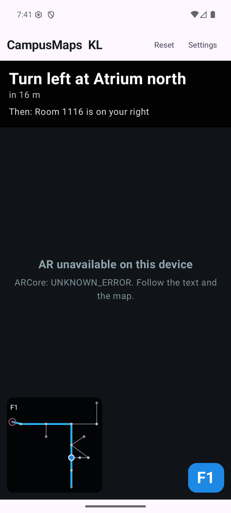
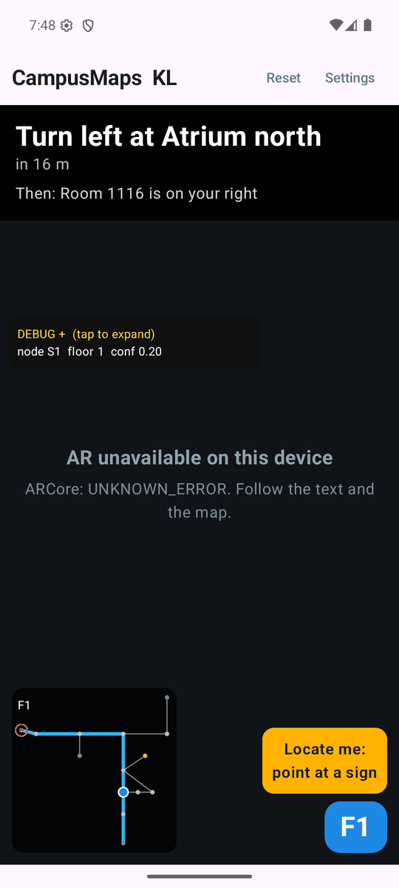
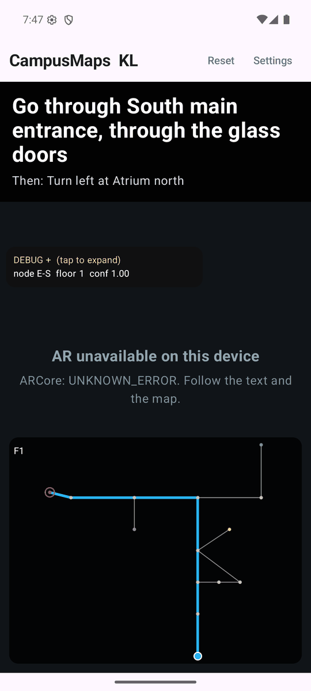
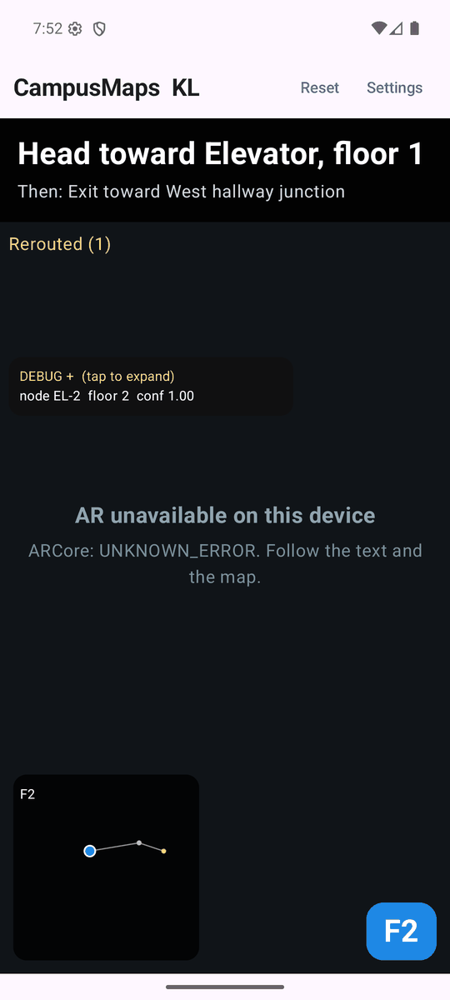
Elements
| Element | Purpose | States | Exact copy today |
|---|---|---|---|
| Camera view exists | Full-screen ARCore camera feed, the background of everything. | live; AR unavailable; camera permission missing; AR failed | AR unavailable on this device/ ARCore: UNKNOWN_ERROR. Follow the text and the map.; Camera permission needed for AR; Waiting for permission; AR failed to start |
| Arrow chain on the floor not built | Flat glowing chevrons every 1.5 m along the route, world-locked, pointing forward. Never cut: it is the demo. | visible; fading beyond 15 m; hidden when tracking is lost | — |
| Next-turn arrow not built | A larger arrow at the next decision point, bent in the turn direction. | left / right / straight / U-turn / elevator / stairs | — |
| Destination pin not built | A pin or ring floating 1.5 m up at the room door, always facing the camera, with the room name. | far; near; arrived | label = room name, e.g. Room 1116 |
| Instruction banner | Current step (large), distance, then the next step (small). | normal; arrived; no route | Turn left at Atrium north, in 16 m, Then: Room 1116 is on your right, No route |
| Turn icon in banner not built | The same direction as the next-turn arrow, as a Material Symbol. | per instruction type | — |
| Rerouted chip | Shows the route was recomputed because the user went off the route. | hidden / count | Rerouted (1) |
| Routing error | A reroute failed. | hidden / shown | e.g. No route to Room 220 from here. |
| Minimap | 2D floor plan: corridors grey, route in colour, user as a dot, destination ring. Works when AR tracking is lost. | small (170 dp) / half screen (tap) | F1(corner label) |
| "Point at a sign" prompt | Asks the user to aim the camera at a known sign so the app can find them. | shown when confidence < 0.5 and not arrived | Locate me: |
| Floor badge | Current floor; counts up during an elevator ride (barometer) in Demo B. | number; unknown | F1, F? |
| End route proposed | Visible exit. Today only the system Back button leaves S2. | — | — |
Design notes
- The judge holds the phone for 60 seconds. Nothing may depend on a gesture they would not guess. Anything tappable (minimap, End) needs a 48 dp target and a visible affordance.
- Readable outdoors and on video. Instruction text sits on a near-opaque dark scrim (today 90% black), 28 sp bold or larger, white. Do not use thin weights or text over the raw camera image.
- The overlay is always dark, whatever the system theme, because it sits on a camera image. Hand over a separate "AR overlay" palette (see Constraints).
- Keep the middle 60% of the screen clear. That is where the arrows are, and the judge must see the floor.
- The prompt, the floor badge and the minimap all live at the bottom and can overlap on small screens. Please lay out all three together, including the half-screen map.
- The next-turn icon in the banner should match the 3D next-turn arrow in shape and colour, so the screen reads as one system.
- When tracking is lost, the arrows hide and the prompt appears. That transition should feel calm (fade, no flash), because it will happen live in front of judges.
6. Arrived
This is a state of S2, and S3 has the same state. The route is complete; the banner turns green and two buttons appear.
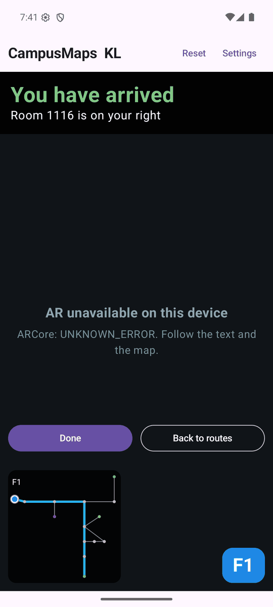
Elements
| Element | Purpose | States | Exact copy today |
|---|---|---|---|
| Arrived headline | Clear end of the route; also spoken. | — | You have arrived |
| Door side line | Which side the door is on. When the door side is unknown the router says the full sentence instead. | side known / unknown | Room 1116 is on your right(also left, ahead, behind) / You have arrived at Room 1116 |
| Done | Resets to S1 for the next judge. | — | Done |
| Back to routes | Back to S1b; the cards are recomputed from here. | — | Back to routes |
- This is the "applause" frame of Demo A. Make it feel finished: a confident colour change and a clear check mark, with no confetti.
- Done is the button the team taps between judges, so make it the primary one.
7. S3 Glasses mode
The phone is in a pocket and the glasses do the talking. This screen is for the teammate operating the demo and for the screen recording in Demo C. It is filmed, so it must be very high contrast. The glasses cannot use their camera and audio at the same time, so the app alternates: take a burst of photos, stop, recognise, then speak.
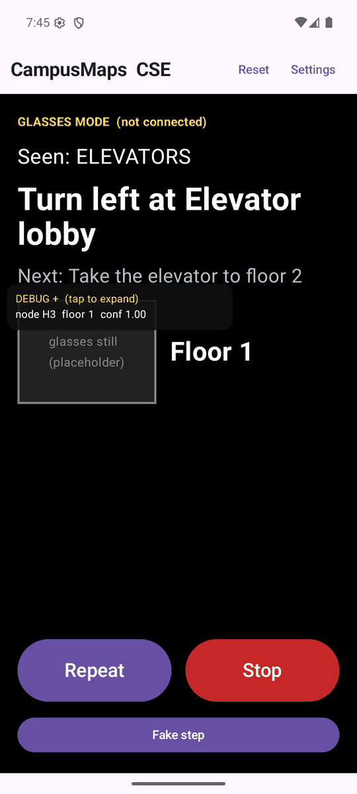
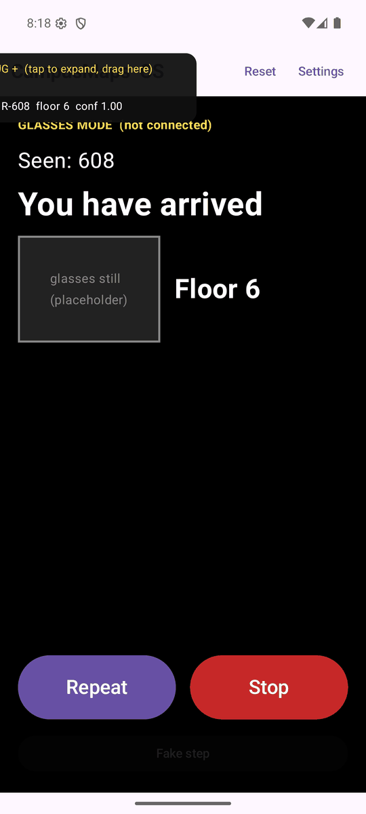
Elements
| Element | Purpose | States | Exact copy today |
|---|---|---|---|
| Mode header + connection | Says this is glasses mode and whether the glasses are connected. | connected / not connected | GLASSES MODE (not connected) |
| Seen line | The last sign the glasses recognised. This is the proof on video that the camera drives the turns. | nothing yet / sign text | Seen: nothing yet, Seen: ELEVATORS, Seen: 608 |
| Current instruction | What is being spoken now. | normal; arrived; no route | Turn left at Elevator lobby, You have arrived, No route |
| Next / door side | The next step, or on arrival the door side. | walking / arrived | Next: Take the elevator to floor 2; arrived: Room 608 is on your right |
| Live thumbnail placeholder | The last still from the glasses, so the operator sees what they see. Can be hidden for recording. | image / empty / hidden | glasses still (placeholder) |
| Floor | Current floor. | number / unknown | Floor 1, Floor ? |
| Look / speak indicator proposed | Shows the burst cycle: camera on, then speaking. They never overlap. | looking / recognising / speaking / idle | — |
| Repeat | Speaks the current instruction again. | — | Repeat |
| Stop | Ends guidance, back to S1b. | — | Stop |
| Fake step | Debug: move one node along the route. | hidden in demo mode; disabled on arrival | Fake step |
- Filmed: pure black background, white text, 24 sp or larger, bold for the instruction. It must survive phone-to-phone video with glare. No greys darker than #B0BEC5 for text.
- Repeat and Stop are 72 dp or taller and use half the width each. They are used without looking closely, while walking.
- This screen stays dark in both system themes.
8. Settings sheet
A bottom sheet opened from the app bar. It is used by the team, not by judges. Do not add depth here; it only needs to look tidy.
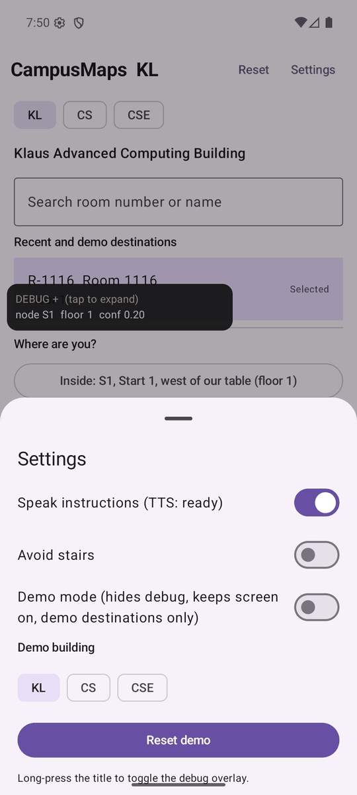
| Element | Purpose | States | Exact copy today |
|---|---|---|---|
| Title | — | — | Settings |
| Speak instructions | Phone text-to-speech on or off, with engine status. | on / off; status text | Speak instructions (TTS: ready) |
| Avoid stairs | Same preference as S1 and S1b. | on / off | Avoid stairs |
| Demo mode | Hides debug, keeps the screen on, lists only demo destinations. | on / off | Demo mode (hides debug, keeps screen on, demo destinations only) |
| Demo building | Building preselected on S1. | KL / CS / CSE | Demo building, KL CS CSE |
| Reset demo | Back to S1 with the demo building. | — | Reset demo |
| Hint | Tells the team about the debug gesture. | hidden in demo mode | Long-press the title to toggle the debug overlay. |
9. Debug overlay
This is a draggable card for the team and testers, and it is visible in Demo C's screen recording ("Seen: ROOM 220"). Style it lightly. It must stay a dense monospace readout that is readable in a screenshot. Demo mode hides it completely.
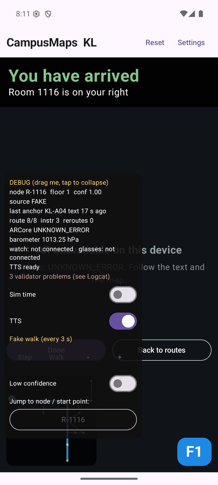
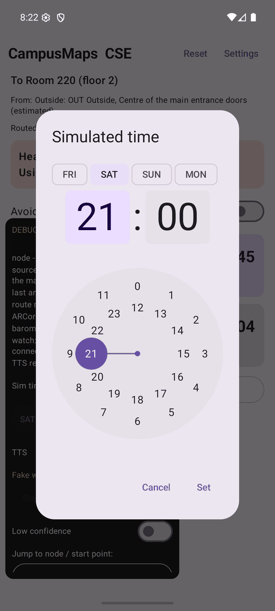
| Element | Purpose | States | Exact copy today |
|---|---|---|---|
| Header / drag handle | Drag to move; tap to collapse. | expanded / collapsed | DEBUG (drag here, tap to collapse)/ DEBUG + (tap to expand, drag here) |
| Readout | Position, confidence, last anchor, route progress, ARCore, barometer, devices, TTS, data problems. | — | node R-1116 floor 1 conf 1.00, last anchor KL-A04 text 17 s ago, route 8/8 instr 3 reroutes 0, barometer 1013.25 hPa/ no barometer, watch: not connected glasses: not connected |
| Sim time | Pretend it is another time so locked-door rules fire (Demo C). | off / on + value; dialog with day chips and clock | Sim time, SAT 2026-09-26 21:00 (change), dialog Simulated time, FRI SAT SUN MON, Cancel Set |
| Fake walk | Move along the route without walking. | Step / Walk / Pause; interval | Fake walk (every 3 s), Step, Walk, Pause |
| Low confidence | Forces the "point at a sign" prompt. | on / off | Low confidence |
| Jump picker | Teleport to any node (tests reroutes). | — | Jump to node / start point: |
- Only asks here: a monospace face, the header colour, and a translucent card that does not let S2 text bleed through (today 95% opaque).
10. Watch face (Galaxy Watch 8 Classic)
This is a separate Wear OS app and is not built yet. It has one screen. The phone does all the thinking; the watch shows one big arrow relative to your body ("turn left next") and buzzes a pattern for each type of step, so you can navigate without looking. It is optional in the demos: if it is not reliable by feature freeze, it is dropped.
| Element | Purpose | Values | Copy |
|---|---|---|---|
| Big arrow | Direction relative to the body, not world-locked. It fills the face. | left, right, straight, turn around, up, down | — |
| Step-type icon | What happens at the next step. | stairs up, stairs down, elevator, door or entrance, locked entrance, arrived | — |
| Short label | One fact. | distance, room, floor | 10 m, Room 312, Floor 3 |
| Haptic | Pattern per step type (ms on/off). | straight 80 · left 80,80,80 · right 80,80,80,80,80 · stairs 300,100,80 · elevator 300,100,300 · door 80,100,300 · locked 80,60,80,60,80,60,80 · arrive 600 | — |
- The screen is round AMOLED, so use black backgrounds. The arrow should read at arm's length in a glance of under half a second, and in ambient mode as an outline.
- Stay inside the round safe area. Nothing tappable is needed; the watch only displays.
11. States and edge cases
| State | When it happens | What shows today | What to design |
|---|---|---|---|
| Locked entrance | The nearest door is card-only at the routing time (for example Student Center East main door after 20:00 on Saturday). | Error-container banner on S1b: Heads up: Main entrance is card-only now. Using West entrance instead.The same text is the first spoken instruction. | Banner with a lock icon in an informative (not alarming) tone. Matching watch face (amber lock + redirect arrow). Possibly a small lock marker on the minimap entrance. |
| No route | Every entrance is locked, or the graph has no path. | Red text on S1/S1b: No route to Room 220: every entrance is card-only at Sat 23:00.or No route to Room 220 from here.No cards. S2 shows No route. | An empty state for S1b: icon, the sentence, and one action (change time is debug-only; "Pick another room" is fine). |
| Low confidence | Position confidence below 0.5: no sign seen recently, or tracking was lost. | Amber card, bottom right of S2: Locate me:/ point at a sign. The arrows should hide (per the AR spec). | The prompt, ideally with a small example of what a sign looks like (Demo A script: "a small hint showing what the nearest anchor looks like"). A calm fade of the arrows out and back in. |
| AR unavailable | No ARCore, camera denied, or the AR session failed. | Dark panel on S2: AR unavailable on this device+ ARCore: UNKNOWN_ERROR. Follow the text and the map./ Camera permission needed for AR/ Permission denied. Guidance continues with text and the map. Enable Camera in system settings for AR. | A graceful text-and-map mode: instruction banner plus a larger minimap. It should not look broken; this is what a replay or fallback demo shows. |
| Arrived | The user reaches the last node. | Green You have arrived, the door-side line, and Done/ Back to routes. S3: same text; the watch buzzes 600 ms. | See section 6. The destination pin changes to an arrived state. |
| Rerouted | The user left the route, so a new route was computed from where they are. | Amber text Rerouted (1)under the banner on S2. | A brief chip that fades after a few seconds; the count is for the team. |
| Demo mode on | Set by the team before judging. | DEMOtag in the app bar; S1 has no search and shows Demo destinations; the debug overlay and the long-press are disabled; Fake stepis hidden on S3; the screen stays on. | A subtle indicator that the team can see and a judge will not question. The S1 layout must look complete without search. |
| Night mode | The system dark theme (the recordings are in the evening). | S1, S1b and Settings follow the system light/dark scheme. S2, S3 and the debug card are always dark. | A dark M3 scheme. Check that S1b cards, the banner and the best-card highlight all work in dark. The AR overlay palette does not change with the theme. |
| Simulated time | The team sets a fake clock so that access rules fire. | S1b header: Routed for Saturday 21:00 (simulated). | A small, honest chip. It appears on video in Demo C, so it must not look like a hack. |
| Already here | Start equals destination. | One card: You are already here, The start is the destination. | Could reuse the arrived visual. |
12. Content and tone
Instructions are generated by the router from the building data, so the designer styles templates, not fixed sentences. Room and place names come from the building files. The voice is short, imperative, and landmark-first, the way a friend gives directions. Every instruction is also spoken, so it must sound natural read aloud.
Instruction templates (from the code)
| Type | Template | Example |
|---|---|---|
| Start (outside) | Walk to {entrance} | Walk to South main entrance |
| Entrance | Go through {entrance}[, {hint}] | Go through South main entrance, through the glass doors |
| Start (inside) | Head toward / Continue toward / Turn left toward {place} | Head toward Elevator, floor 1 |
| Turn | Turn left | Turn right | Turn around at {place}[, {hint}] | Turn left at Atrium north |
| Elevator | Take the elevator to floor {n} | Take the elevator to floor 6 |
| Stairs | Take the stairs up|down {one|two|…} floor(s) | Take the stairs up two floors |
| After a floor change | Exit toward {place} | Exit toward West hallway junction |
| Door | Go through the door | Go through the door |
| Locked notice | Heads up: {entrance} is card-only now. Using {other} instead. (or: Taking another way.) | Heads up: Main entrance is card-only now. Using West entrance instead. |
| Arrive | {room} is on your left|right|ahead|behind — or — You have arrived at {room} | Room 608 is on your right |
| Arrived headline | You have arrived | You have arrived |
| Already there | You are at {room} | You are at Room 1116 |
Hints are appended with a comma only when the sentence stays short. Distances show as in 16 m
. S2 prefixes the next step with Then:
and S3 with Next:
.
Numbers and formats
- ETA is m:ss, rounded:
0:44
,2:14
,3:53
; unknown is--:--
. - ETA difference is under a minute in seconds (
+47 s
), otherwise m:ss (+1:39
). - Entrance on cards: entrance name +
Enter on floor 1
. From an inside start:From here
orFrom here, by elevator
. - Floors are integers:
F1
on the S2 badge,Floor 1
on S3 and in lists,(floor 6)
in the S1b header. - Units are metres and seconds everywhere. Do not show feet or minutes-only.
Voice
- Calm and specific. "Heads up" is as loud as it gets. The app has already solved the problem when it tells you about it.
- Name landmarks people can see ("Atrium north", "the glass doors"), not node ids.
- Pitch lines that set the tone: "Google Maps gets you to the building. Then you're on your own." and "The closest door isn't always the fastest way to your seat."
13. Constraints for the designer
Platform
- Jetpack Compose, Material 3. Components are standard M3 (cards, switches, filter chips, segmented buttons, bottom sheet, buttons). Custom drawing is fine for the AR overlay and minimap.
- Phone: Galaxy S25 Ultra, portrait only (locked). Screenshots here are 1080 × 2400 px (about 412 dp wide). Design at 412 × 915 dp; the wireframes are drawn at 360 × 780 for simplicity.
- Everything is on the device. Fonts are bundled in the app, not downloaded at runtime (there is no network in the demo).
- Touch targets at least 48 dp. Main buttons are already measured at 48 to 61 dp.
Colour: hand over as M3 tokens
The app today uses the stock M3 baseline scheme (purple). Please hand over a light and a dark scheme as M3 roles. At minimum:
| M3 role | Used for in CampusMaps | Today (light / dark) |
|---|---|---|
| primary / onPrimary | Route button, Done, selected chips, switches | #6750A4 / #D0BCFF |
| primaryContainer / onPrimaryContainer | Best route card, selected destination row | #EADDFF / #4F378B |
| secondary (+ container) | Method badge, other route cards, chips | #625B71 / #CCC2DC |
| tertiary (+ container) | Suggested for the locked-entrance banner and the simulated-time chip | #7D5260 / #EFB8C8 |
| surface, surfaceContainer*, onSurface, outline | Backgrounds, sheet, list rows | #FEF7FF / #141218 |
| error / errorContainer | No route, routing errors, today also the locked banner | #B3261E / #F2B8B5 |
AR overlay palette (fixed, not themed). These colours sit on a camera image or pure black, so they do not follow light or dark. Please hand them over as a separate named set. Today's hard-coded values:
| Name (suggested) | Use | Today |
|---|---|---|
| overlayScrim | Instruction banner, minimap background | #000000 at 90% / 80% |
| overlayText / overlayTextMuted | Instruction / distance and "Then:" | #FFFFFF / #B0BEC5, #CFD8DC |
| arrow (AR chevrons, next-turn, route line on map) | The guidance colour | #29B6F6 (map route today; AR arrows not built) |
| user | User dot, floor badge | #1E88E5 |
| destination | Destination ring on the map, pin | #EF5350 |
| arrived | "You have arrived" | #81C784 |
| attention | Locate prompt / reroute chip | #FFB300 / #FFCC80 |
| stop | S3 Stop | #C62828 |
| map nodes | entrance, stairs, elevator, room, other | |
| debug | Card, header, links | #101010 at 95%, #FFD54F, #90CAF9 |
Type and icons
- One type family, bundled as TTF, mapped to the M3 type scale. Pick one that is highly legible at a distance and on video. Atkinson Hyperlegible fits the accessibility story; Inter or Roboto Flex are safe too. Suggested minimum sizes: S2 instruction 28 sp bold, S3 instruction 30 sp bold, S1b ETA 28 sp bold.
- Icons: Material Symbols (one style, Rounded or Outlined). Likely set:
turn_left,turn_right,straight,u_turn_left,elevator,stairs,door_front,lock,location_on,my_location,signpost,eyeglasses,accessible,volume_up,replay,stop,check_circle,settings,restart_alt,schedule,map.
The AR arrow
- A flat glowing chevron lying on the floor, about 0.5 m long and 0.3 m wide, repeated every 1.5 m along the path. It uses an emissive (self-lit) colour so it reads in dim hallways, fades out beyond 15 m, and is hidden when tracking is lost.
- It must read on both a dark carpet and a bright, sunlit atrium floor. Consider a light core with a darker edge or glow, and avoid pure white (it blows out on camera) and red/green-only meaning.
- A larger next-turn arrow at the turn point (bent left or right, or an up arrow for an elevator).
- A destination pin or ring, 1.5 m high at the door, facing the camera, with a text label. A label alone is acceptable if the pin gets cut.
- Deliver a top-down vector (SVG) with exact proportions and hex colours; the team builds the 3D model (GLB) from it. A mock-up composited on a real hallway photo would help a lot.
Watch
- Galaxy Watch 8 Classic, round AMOLED, Wear OS 6, Compose for Wear OS Material 3. One screen with a single big arrow. The brief says a 1.5 in screen; Samsung lists 1.34 in and 438 × 438 px for this model, so check on the device.
Do not design yet
- Onboarding and permission explainers, accounts or sign-in, settings depth beyond the sheet above, outdoor (Geospatial) screens, the replay tool, multiple-building search.
14. Spec conflicts to resolve
These places in the written spec disagree with each other or with the build. The code is what ships, so it wins unless the team decides otherwise.
- The locked-entrance copy exists in three versions. The UI spec says
North entrance is card-access after 10 pm. Routes below use the south entrance.
The Demo C script says…card-access only after 7 pm. Redirecting you to the west entrance, one minute away.
The code saysHeads up: Main entrance is card-only now. Using West entrance instead.
None of them agree on the hour, the door, or whether a time is given. - The "point at a sign" prompt also has three versions. Demo A:
Point the camera at a sign to get started
(with an example picture). Demo A fallback:Look at a sign to re-locate
. Code:Locate me: point at a sign
, and only when confidence is below 0.5. The start-of-route prompt and the lost-tracking prompt may need to be two different states. - ETA format. The spec and the code use m:ss (
2:14
). The Demo B script shows whole minutes (North entrance, elevator, 4 min
), and a code comment shows3 min
. - Vertical method. The spec asks for an icon; the build shows text badges (
STAIRS
,ELEV
,LEVEL
). "LEVEL" (no floor change) has no obvious icon. - Glasses entry. The spec says to offer "Guide me with glasses" automatically when glasses are connected. The build always shows the button. Show it always, or only when connected?
- "Next" prefix. S2 says
Then:
; S3 saysNext:
. - Floor notation. The app uses
F1
,Floor 1
, and(floor 6)
in different places. - Arrived text can repeat itself. When the door side is unknown, S2 shows
You have arrived
overYou have arrived at Room 1116
. - No hidden gestures, but debug is a long-press. This is acceptable only because demo mode turns it off. The minimap's tap-to-enlarge has no visible affordance either.
- No visible way out of S2. Only the system Back button leaves S2. A judge will look for an on-screen exit.
- Theme. S1, S1b and Settings follow the system theme, but S2, S3 and debug are always dark. Moving from a light S1b to a black S2 is a hard jump on video. Consider a dark S1b in demo mode, or accept the jump.
- Crowded bottom of S2. The minimap (bottom left), the "Locate me" prompt and the floor badge (both bottom right) compete for space, and the enlarged map takes half the screen, covering the floor arrows.
- Watch screen size. The brief says 1.5 in, but the Watch 8 Classic lists 1.34 in (438 × 438 px). The Demo B script also wants a "big floor number on screen and on the watch" during the elevator ride, which the one-screen watch spec does not describe.
- Reset in the app bar. The team needs Reset between judges, but it sits in the app bar where a judge can tap it mid-route.
- Building chips. The spec says the chips read "Klaus, Classroom South, Student Center East"; the build shows the codes
KL
,CS
,CSE
. - Entrance floors in Classroom South. The Demo B plan says two entrances are on floor 2 (one via Library South), but today's cards show
Library South entrance · Enter on floor 1
. This is probably a data issue, but the designer will see it in the screenshots.
15. Asks for the designer
- 1S2 AR overlay and the arrow look. The instruction banner, the next-turn icon, the AR chevron (top-down SVG + colours + glow), the next-turn arrow, the destination pin and label, the minimap style, the "point at a sign" prompt, the floor badge, the lost-tracking and arrived states, and the AR overlay palette. Show it on a real hallway photo, dim and bright.
- 2S1b route cards. Card anatomy (entrance, method icon, ETA, difference line, also-via), best-card treatment, the locked-entrance banner, the no-route empty state, and the simulated-time chip. Light and dark.
- 3S1 Destination. Building selector, destination rows, start picker, avoid-stairs row, the primary button, and the demo-mode layout. Light and dark.
- 4S3 Glasses mode. A high-contrast black layout for filming, the connection chip, the thumbnail, the look/speak indicator, and Repeat/Stop.
- 5Watch face. Arrow set (left, right, straight, U-turn, up, down), step icons, the label style, the locked and arrived variants, and an ambient outline version.
- 6App icon. An adaptive icon (foreground + background layers, 108 dp canvas) plus a monochrome layer. A matching Wear OS icon is a bonus.
Deliver: M3 colour tokens (light + dark) and the AR overlay set as hex, a type-scale mapping for one family, Figma frames at 412 dp width, and SVG exports for the arrow, the pin and the icon. Keep the screens in section 13's "do not design yet" list out of scope.